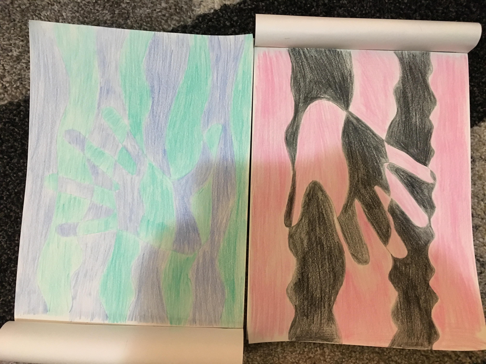
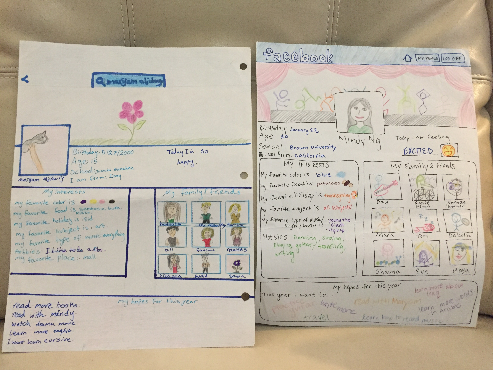
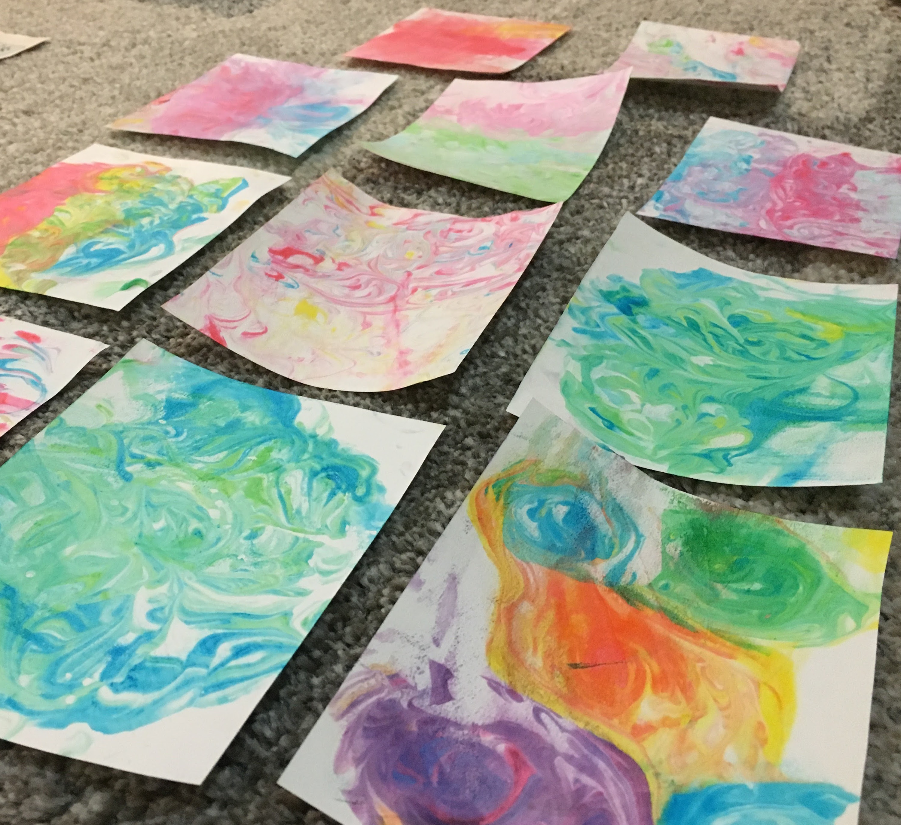
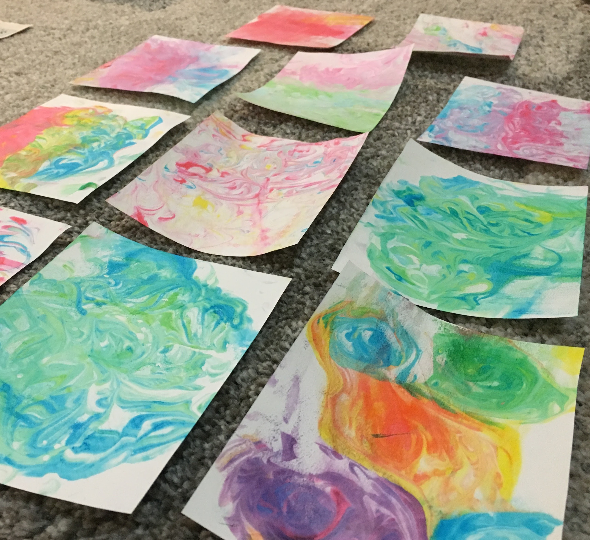
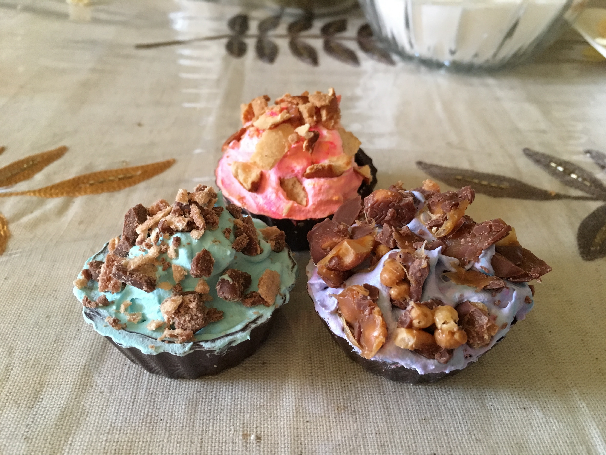
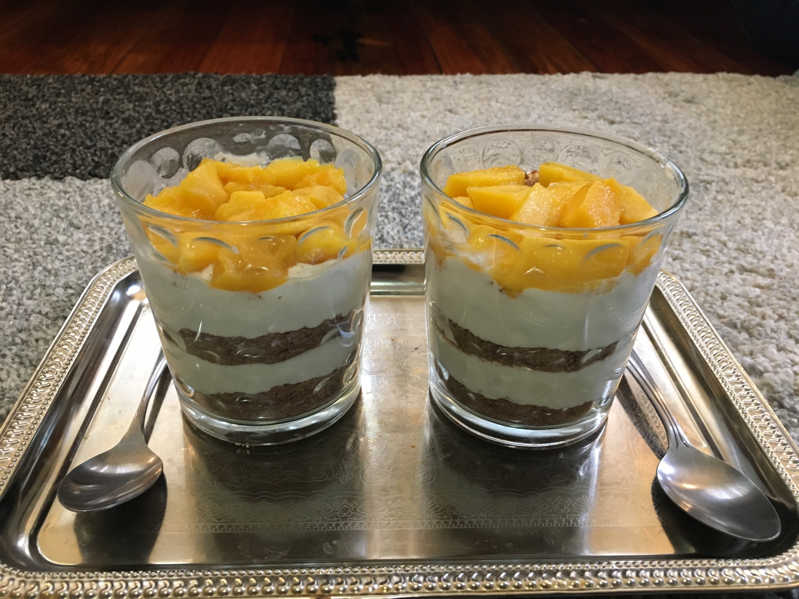

about us
Welcome to our website. This website is about art. This is our diy project
Our art


 


Maryam’s recipe
Baking desserts or
cooking food is not about following the ingredients,
it is about putting your love in the recipes that you make.
This recipe is related to Arabic dessert and it's called TORAB EL MELOOK (KINGS’ DUST).
Torab means dust and El Melook means king. Usually people make it when someone is coming to
their house or they make it when the whole family sits together in the afternoon. I love this dessert.
The first time I ate it in a restaurant, it was so good and I looked in the internet to find out how to
make this dessert. I saw a lot of people making this dessert by putting different kinds of ingredients.
I wondered if I could put my own ingredients but at the end the taste would be the same as torab el
melook, so I decided to try it! This dessert made me love to cook and look on the internet about different
kinds of food around the world.
This recipe takes 30 minutes to prep and an hour and a half total time.
It serves 2 people.
-
The ingredients of this recipe are:
- Chocolate tea Biscuits (depends on how many you want).
- 1 cup of whipped topping
- 1/2 cup of table cream
- 2 teaspoons of condensed sweetened milk.
- 1 teaspoon of unsalted melted butter.
-
How to make it:-
- In a bowl mix the cup of whipped topping with half cup of table cream.
- Put the 2 teaspoons of condensed sweetened milk and 1 teaspoon of unsalted melted butter and mix them all together.
- Crush the biscuit(s) and make it look like sand.
- Get a small clear cup or jar.
- Put a layer of biscuit into the cup or jar and then put half of the mix on top of the layer of biscuit. Repeat the step.
- Make sure to cover the top with biscuit and decorate it with strawberry or chocolate or anything you want.
- Put it in the refrigerator for 1 to 2 hours.

This is an easy dessert that is fun to make.
Tell us what you think!